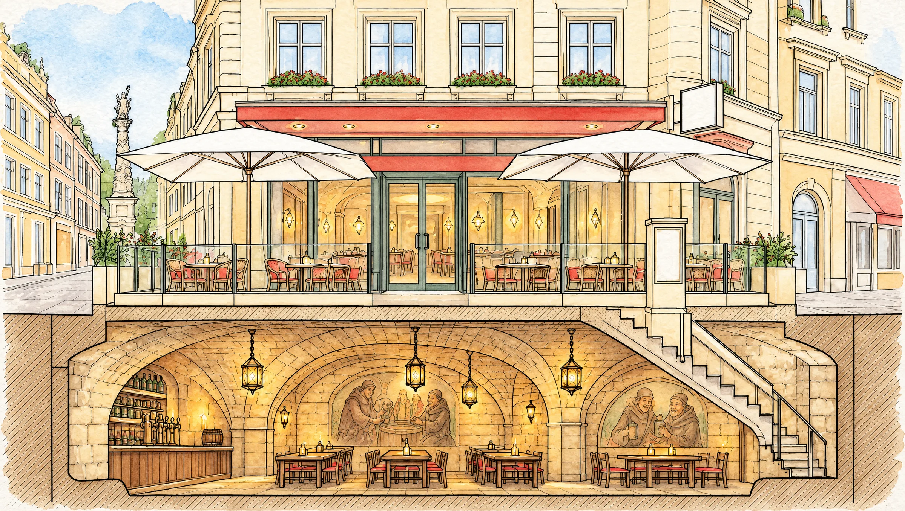
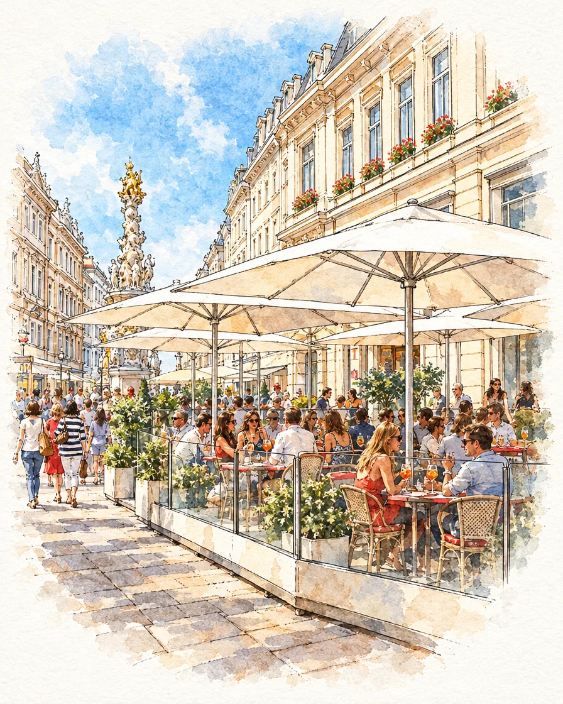
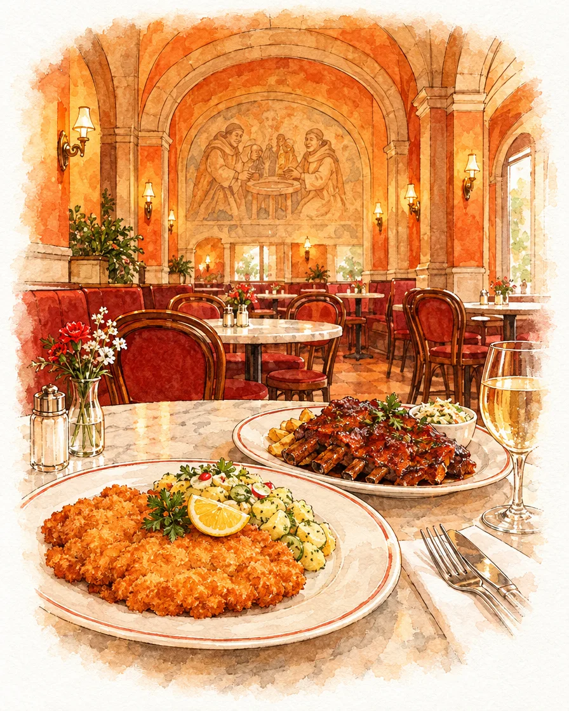
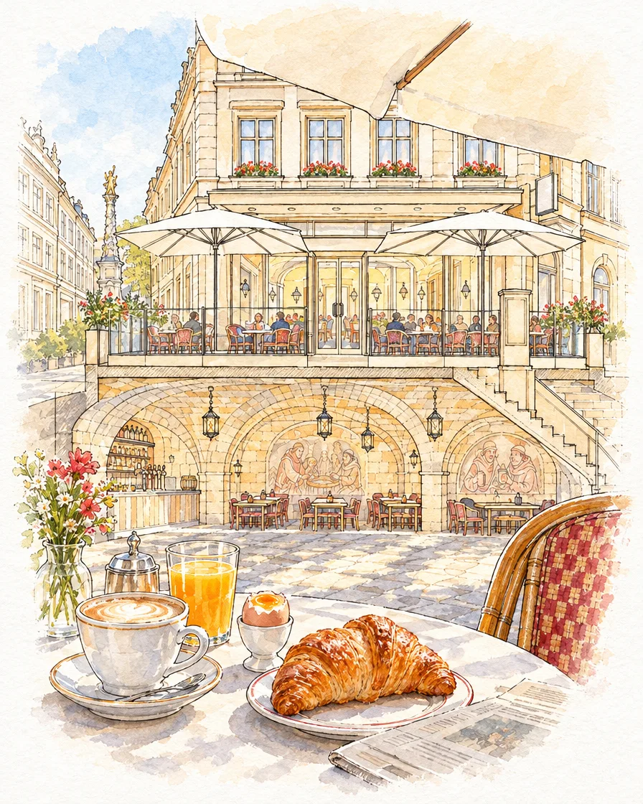
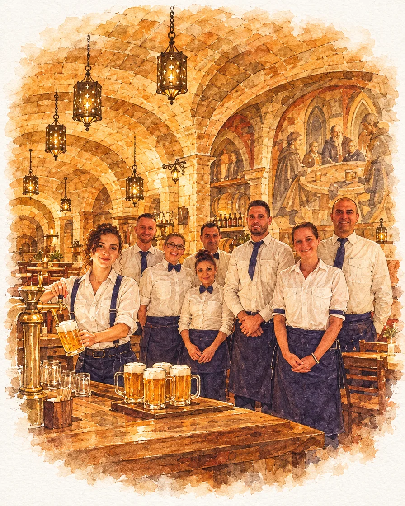
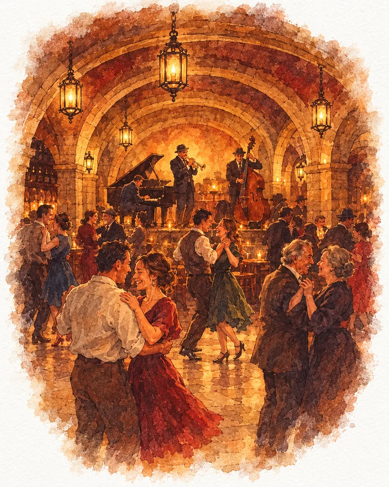

EG · Erdgeschoß & Schanigarten
Chattanooga
Café & Grill. Frühstück ab 8 Uhr, Wiener und internationale Küche, durchgehend.
Täglich 8–24 Uhr
Graben 29a · 1010 Wien · seit 1960
Oben das Chattanooga, Café & Grill mit Schanigarten. Unten das Wiener Stadtbräu, Bierkeller unterm Gewölbe. Tippen Sie auf eine Etage.

Prost! Frisch gezapft ab 16 Uhr, unten im Keller.
EG · Erdgeschoß & Schanigarten
Café & Grill. Frühstück ab 8 Uhr, Wiener und internationale Küche, durchgehend.
Täglich 8–24 Uhr
UG · Gewölbekeller
Gasthaus mit Bierfokus. Bier vom Fass, Wirtshausküche, Tanz und Jazz unterm Gewölbe.
Täglich ab 16 Uhr
Durchs Haus
Wischen oder mit den Pfeilen blättern





Erdgeschoß
Über ein halbes Jahrhundert am Graben: Wiener und internationale Küche, durchgehend ab 8 Uhr früh. Drinnen klimatisiert, draußen einer der größten Schanigärten der Innenstadt.
Gewölbekeller
Gehobene Gasthaustradition mitten in der Stadt: gepflegte Biere und Weine, urige Wiener Küche und Abende mit Musik. In zweiter Generation geführt von Isabella und Michael Funk.
Besuch
U1 / U3 Stephansplatz, zwei Minuten zu Fuß. Ein Eingang am Graben, die Treppe führt in den Keller.
Route in Google Maps| Chattanooga | täglich 8–24 Uhr Küche bis 23:30 |
|---|---|
| Wiener Stadtbräu | täglich ab 16 Uhr Küche bis 22 Uhr · bitte bestätigen |
+43 1 533 5000
reservation@chattanooga.at
Online-Reservierung: Tool noch offen